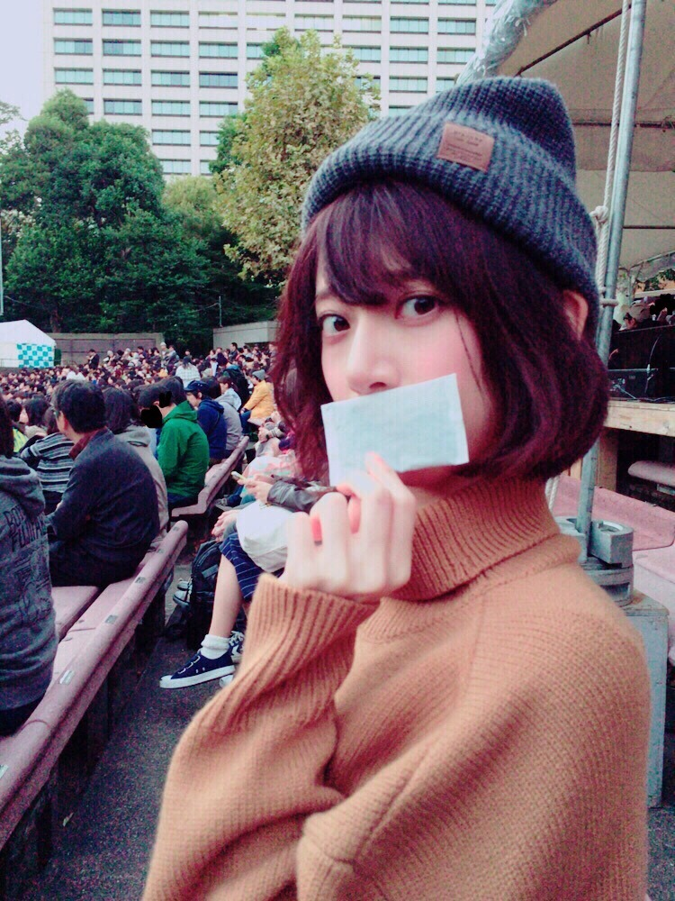
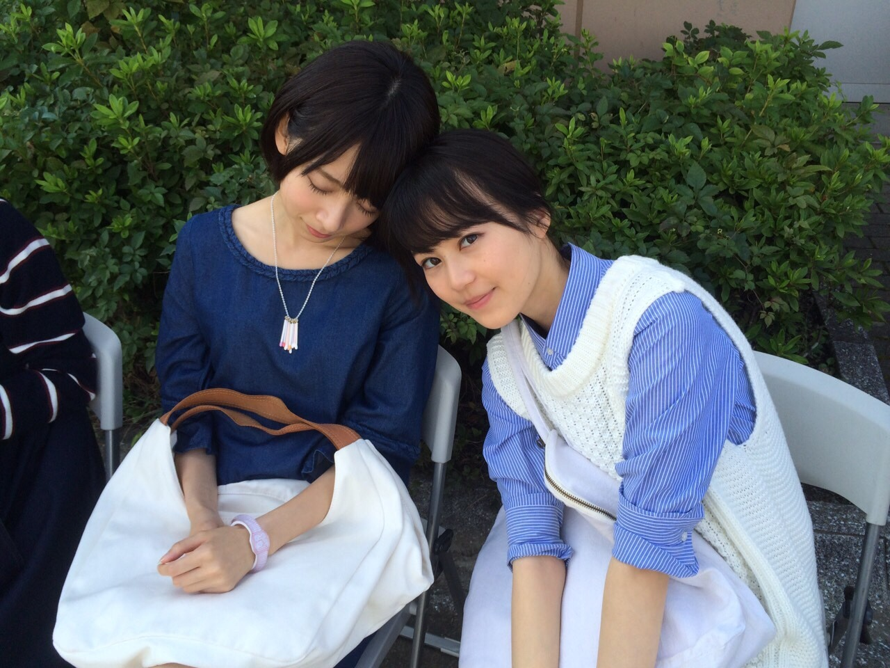

| 2015/11 17 Tue | もうふゆ！ |
久しぶりです！ななみです！最近いろいろありすぎて書ききれないかも、、、
これは、なんでしょう？？

答えはホッカイロですが、ここはどこでしょう？？

うふふ、わかる方はわかるでしょう、、、
日比谷野音！！！
フジファブリックさんの日比谷野音にこの前行ってきました(﹡´◡`﹡ )
最高でした、、、！！！泣いた！！ 耳も目も幸せでした、、、（ ｉ _ ｉ ）
Girl!Girl!Girl!のMVに出演させて頂いて、ほんとに夢のようなのですが
わたしがMVに出演させて頂いたその曲を、本人の生演奏で日比谷野音で聴いて、たくさんのファンの皆さんが揺れている光景を後ろから見れて、
とても不思議な気持ちでした、嬉しい、、、！
フジファブリックの皆さんにご挨拶させて頂いたときも毎回優しくて、こんな私にもとっても気さくに話しかけて頂いて、、、
私の激しい人見知りと恐縮のあまり、全くお話できなかったのが心残りです...。(´._.｀)
最高なアルバムに関わらせて頂いて光栄でした、、、（ ｉ _ ｉ ）！！
そう！この１ヶ月の間はいろんなライブにちょこちょこお邪魔していたのだ、、、！！！
わたしが応援ガールを務めた未確認フェスティバルの優勝者、Shout it Out が
その優勝賞金を使って主催したフリーライブにプリンを持って行きました！
大好きなWa・Bi・Saの和三盆のプリン！笑
わたしは応援ガールだったのにお仕事丸かぶりで当日会場に一度も駆けつけることが出来なかったのです、、、
でもなんと、優勝したShout it Outがなんとも男気ある賞金の使い方をすると聞いてとてもアツいものを感じ（ ｉ _ ｉ ）
せめてもの応援ガール！！と思いお邪魔しました！！！
Shout it Out、リーガルリリー、Brain the Sun、SHE'S
みなさんかっこよかったー！！同年代！！
モバメではレポとか送ってるけど、もちろんキュウソネコカミさんの対マンツアーにもお邪魔しました！忘れらんねえよさん！！
最高！！両者最高！！！もう終始大好きで終始うるうる！セットリスト個人的に最高！！楽しかった！！！また行けたら行きたいなあ、、、
すごい、ライブの話ばっかりになっちゃってるけど、ちゃんと仕事もしてます！

同じ旭川出身、とにかく明るい安村さんと！
旭川出身の方と会えるとうれしい！！
珍プレー好プレーの収録でご一緒したのヾ(｡･ω･｡)
ぜひ見てね！

CanCamのオフショット～～！

今、話したい誰かがいるのMVオフショット
朝早かったなあ
ふぅ、長文だ！！
コメント(2038)
2015/11/17 16:48